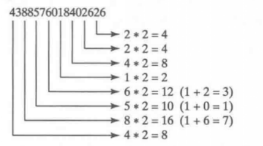
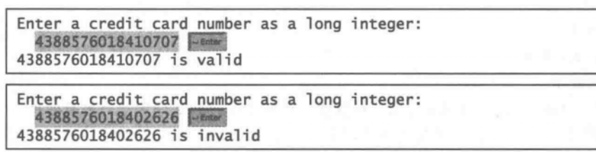

6.31（财务应用程序：信用卡号的合法性）信用卡号遵循下面的模式。一个信用卡号必须是13到16位的整数。它的开头必须是：
在1954年，IBM的Hans Luhn提出一种算法，该算法可以验证信用卡号的有效性。这个算法在确定输入的卡号是否正确，或者这张信用卡号是否被扫描仪正确扫描方面是非常有用的。遵循这个合法性检 测可以生成所有的信用卡号，通常称之为Luhn检测或者Mod 10检测，可以如下描述（为了方便解释，假设卡号为4388576018402626)：
1）从右到左对每个数字翻倍。如果对某个数字翻倍之后的结果是一个两位数，那么就将这两位加在一起得到一位数。

2) 现在将第一步得到的所有一位数相加。
4+4+8+2+3+1+7+8=37
3) 将卡号里从右到左在奇数位上的所有数字相加。
6+6+0+8+0+7+8+3=38
4) 将第二步和第三步得到的结果相加。
37+38=75
5) 如果第四步得到的结果能被10整除，那么卡号是合法的；否则，卡号是不合法的。例
如，号码4388576018402626是不合法的，但是号码4388576018410707是合法的。
编写程序，提示用户输入一个long型整数的信用卡号码，显示这个数字是合法的还是非法
的。使用下面的方法设计程序：
1 /** Returntrue if the card number is valid */
2 public static boolean isVa1id(long number)
3
4 /** Getthe result from Step2 */
5 public static int sumOfDoubleEvenPIace(long number)
6 /** Return this number if it is a single digit, otherwise,
7 * return the sum of the two digits*/
8 public static int getDigit(int number)
9 /** Returnsum ofodd-placedigitsin number */
10 public static int sumOfOddPlace(1ong number)
11 /** Returntrue if the digitd is a prefix for number */
12 public static boolean prefixMatched(1ong number, int d)
13 /** Returnthe number ofdigitsin d */
14 public static int getSize(1ong d)
15 /** Return the first k number ofdigitsfrom number. If the
16 * number ofdigitsin number is less than k, return number. */
17 public static long getPrefix(long number, int k) 下面是程序的运行示例：（你也可以通过将输人作为一个宇符串读人，以及对宇符串进行处
理来验证信用卡卡号。

以下为实现这功能的代码：
1 /** fileName: creditCardVerify.java
2 * 作用: 计算信用卡号的合法性
3 * mail: xuangliang1@live.com
4 * 说明： 信用卡号必须是13到16位，开头必须是4，5，37，6
5 *
6 */
7
8 import java.util.Scanner;
9
10 public class creditCardVerify{
11 public static void main(String[] args) {
12 Scanner input = new Scanner(System.in);
13 System.out.print("请输入卡号，按Enter结束输入: ");
14 long i = input.nextLong();
15 if (isValid(i))
16 System.out.println(i + " is valid");
17 else
18 System.out.println(i + " is invalid");
19 }
20
21 /** Return true if the card number is valid */
22 /** 返回ture表明这个卡号是有效的 */
23 public static boolean isValid(long number) {
24 if(prefixMatched(number)){
25 if(sumOfdoubleEvenPlace(number)%10 == 0)
26 return true;
27 }
28 return false;
29 }
30
31 /**
32 * Get the result from Step 2 从步骤2得到结果？。双重偶数之和
33 */
34 public static int sumOfdoubleEvenPlace(long number) {
35 int sum = 0;
36 int sumGetdigit = 0;
37 long temp = 0;
38 int numberSize = getSize(number);
39 for(int i =2; i <= numberSize; i += 2){
40 temp = getPrefix(number, i);
41 sumGetdigit += getDigit((int)temp*2);
42 }
43 sum = sumGetdigit + sumOfOddPlace(number);
44 return sum;
45 }
46
47 /**
48 * Retrun this number if it is a single digit, otherwise, Return the sum of the
49 * two digits
50 *
51 * 如果是单个数字，则返回该数字，否则返回两位数的和。获得数字
52 */
53 public static int getDigit(int number) {
54 int numGetDigit = 0;
55 if(number % 10 >= 0){
56 numGetDigit = number % 10;
57 number /= 10;
58 numGetDigit += number;
59 return numGetDigit;
60 }
61 return number;
62 }
63
64 /**
65 * Return sum of odd-place digits in number 返回卡号总右往左的奇位数之和
66 */
67 public static int sumOfOddPlace(long number) {
68 int sum = 0, i = 0;
69 int Size = getSize(number);
70
71 for(i = 1; i <= Size; i+=2){
72 sum += getPrefix(number, i);
73 }
74 return sum;
75 }
76
77 /**
78 * Return true if the digit d is a prefix for number 判断卡号的前缀是否合法
79 */
80 public static boolean prefixMatched(long number) {
81 int numberSize = getSize(number);
82 if(numberSize >= 13 && numberSize <= 16){
83 switch((int)getPrefix(number, numberSize)){
84 case 4: return true;
85 case 5: return true;
86 case 6: return true;
87 case 3: if((int)getPrefix(number, numberSize -1) == 7)
88 return true;
89 }
90 }
91 return false;
92 }
93
94 /** Return the number of digits in d
95 * 获得信用卡号的长度并将结果返回
96 */
97 public static int getSize(long d){
98 long i= 0;
99 while(d > 0){
100 i += 1;
101 d /= 10;
102 }
103 return (int)i;
104 }
105
106 /** Return the first k number of digits from number. If the
107 * Number of digits in number is less than k, return number.
108 * 从数字中返回第一个k位数。如果数字总的位数小于k，则返回数字。
109 * 应该是获得信用卡号的第k位的字母
110 */
111 public static long getPrefix(long number, int k){
112 int i = 0;
113 long temp=0;
114 while (i < k){
115 i++;
116 temp = number % 10;
117 number /= 10;
118 }
119 return temp;
120 }
121 }